BAQI UPI
Belajar Al-Qur'an Intensif
Unit Kegiatan Mahasiswa yang berfokus pada pembinaan dakwah Al-Qur'an di lingkungan Universitas Pendidikan Indonesia. Menanamkan nilai spiritual melalui pendidikan Al-Qur'an yang modern dan inklusif.
اِنَّا نَحْنُ نَزَّلْنَا الذِّكْرَ وَاِنَّا لَهٗ لَحٰفِظُوْنَ ٩
"Sesungguhnya Kamilah yang menurunkan Al-Qur’an dan pasti Kami (pula) yang memeliharanya." — Q.S. Al-Hijr ayat 9
Spiritual Growth
Guided Mentorship
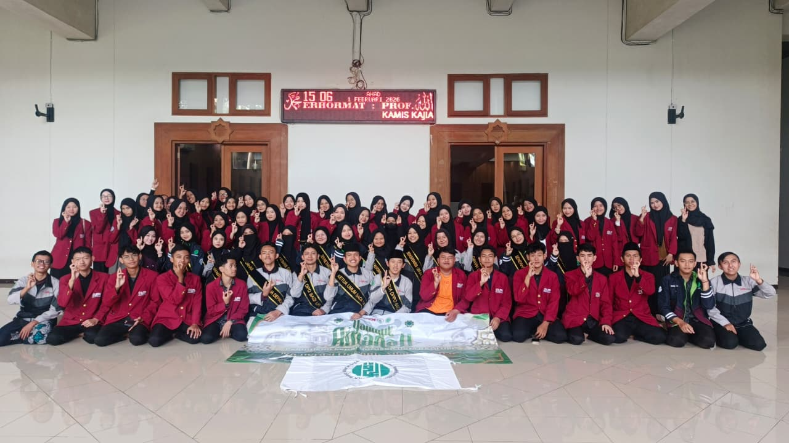
Sejarah Kami
Berdiri 1987, Mewarisi Semangat Dakwah
UKM BAQI UPI telah menjadi pusat pembelajaran Al-Qur'an dan pengembangan karakter islami bagi mahasiswa UPI selama lebih dari tiga dekade. Berawal dari semangat dakwah di lingkungan kampus, kami terus bertransformasi menjadi wadah yang profesional dan relevan dengan perkembangan zaman.
36+
Tahun Berkhidmat
100+
Anggota Aktif
Visi Kami
"Menjadi lembaga dakwah kampus yang unggul dalam pembinaan Al-Qur'an dan membentuk karakter rabbani bagi sivitas akademika UPI."
Misi Kami
Pendidikan
Menyelenggarakan program pembelajaran Al-Qur'an yang sistematis dan berkualitas bagi seluruh mahasiswa.
Pembinaan
Membentuk kader dakwah yang memiliki pemahaman Al-Qur'an yang mendalam dan berakhlakul karimah.
Syiar Islam
Mensyiarkan nilai-nilai Al-Qur'an secara luas di lingkungan kampus dan masyarakat sekitar.
Struktur Organisasi
Hierarki Kepengurusan
Periode 2025 – 2026
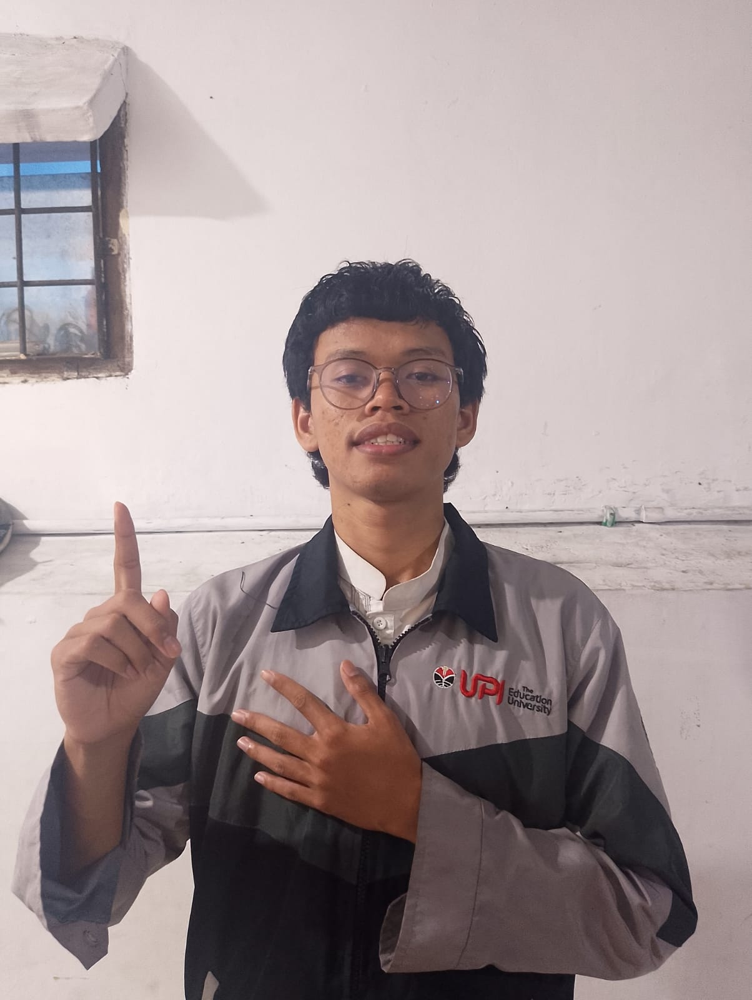
M. Ahga Cendikia Antahta
Bimbingan strategis dan pengawasan
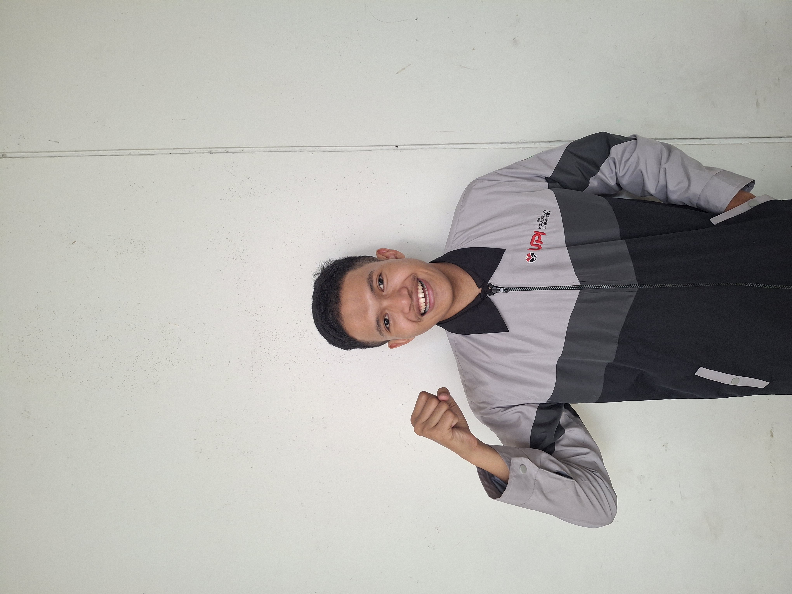
Lintang Luthfi Pastika
Menetapkan kebijakan, koordinasi, dan akuntabilitas organisasi
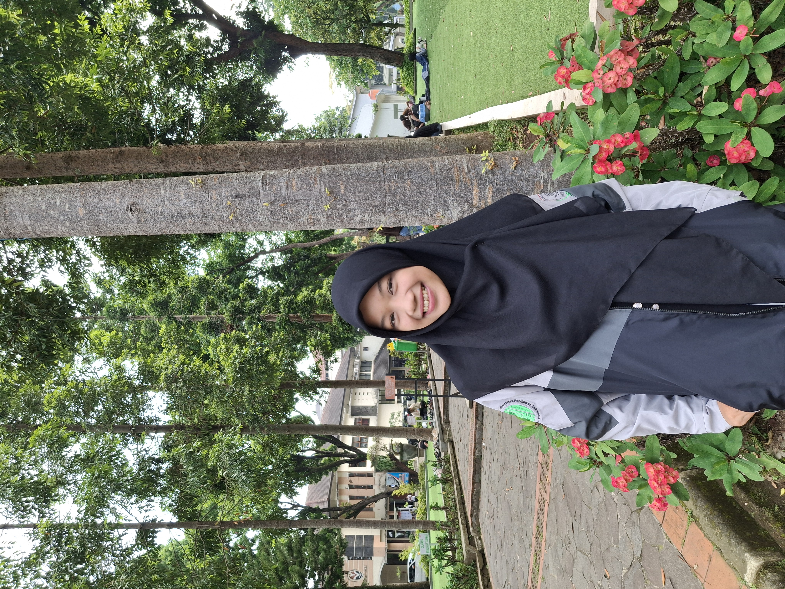
Salwa Zakiah A. Suryana
Sekretaris I
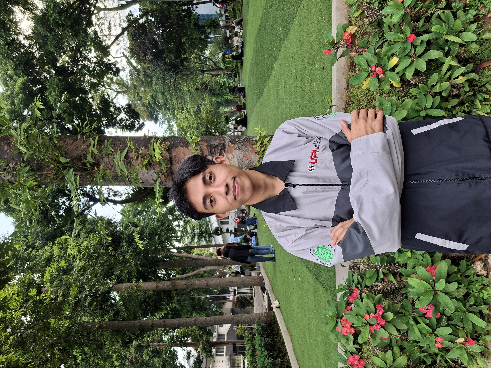
Sahroni
Sekretaris II
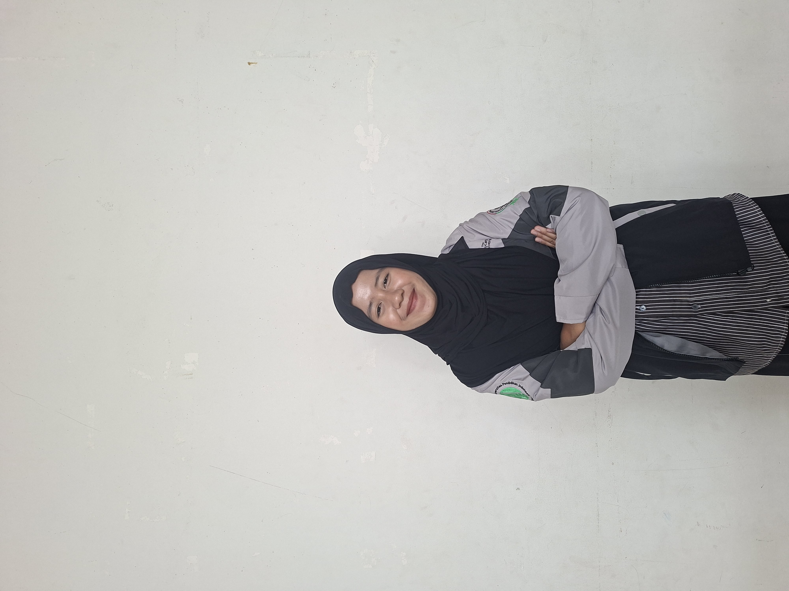
Riswaty Nurazizah
Bendahara I
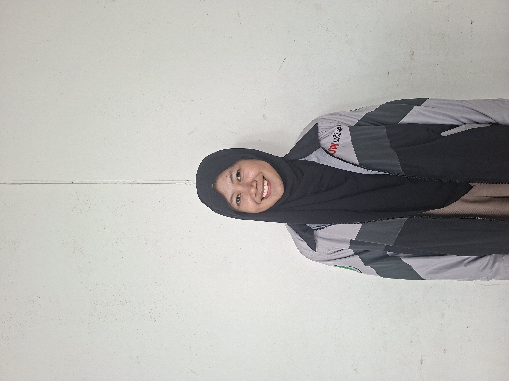
Siti Lulu Awaliah
Bendahara II
Departemen Pengembangan Al-Qur'an
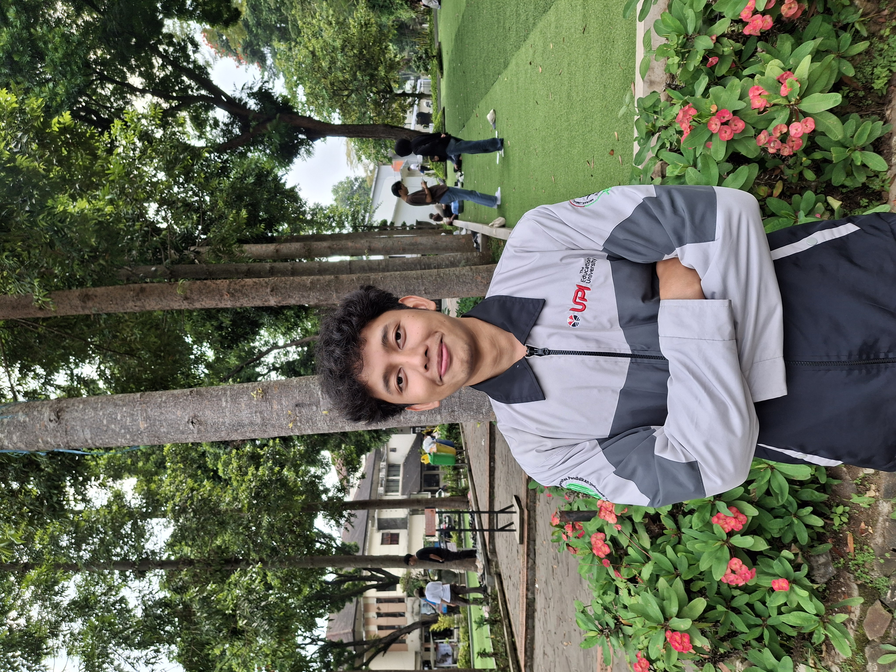
Program Kerja DPQ
-
01Post-Test & Pre-Test
Tes baca Al-Qur'an untuk mengetahui tingkat bacaan mahasiswa, kemudian di-test kembali untuk melihat perkembangan.
-
02Talaqqi
Bimbingan baca Al-Qur'an intensif dari dasar hingga mahir secara langsung bersama mentor berpengalaman.
-
03Tasmi'
Program setoran hafalan Al-Qur'an yang disimak bersama untuk menjaga kualitas hafalan anggota.
-
04Tahsin Camp
Kegiatan intensif pembelajaran tajwid dan makhraj huruf secara mendalam dalam format camp.
-
05MABIT
Malam Bina Iman dan Taqwa — sarana mempererat ukhuwah dan memperdalam spiritualitas anggota.
Departemen Pengembangan Organisasi
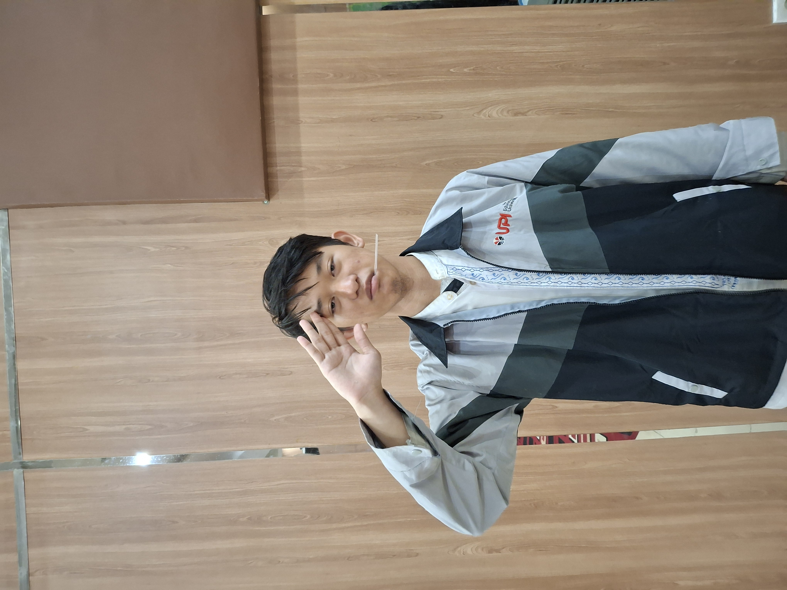
Program Kerja DPPO
-
01Kumpul All Pengurus (KAP)
Kegiatan upgrading dan silaturahmi seluruh pengurus aktif BAQI UPI, bisa berupa buka bersama, santunan, atau kumpul biasa.
-
02Pembinaan GenQ
Program pembinaan kerohanian dan penyucian jiwa untuk mendekatkan pengurus & GenQ kepada Allah di tengah padatnya aktivitas.
-
03Real BAQI
Program inti mentoring tahsin (TPD & TD) dan halaqah tahfidz (TT & TM) untuk memfasilitasi baca dan hafal Al-Qur'an.
-
04Muhasabah
Evaluasi mandiri pengurus setiap 3 bulan melalui Google Form untuk memonitoring kinerja dan ketercapaian visi misi.
-
05Studi Banding
Berbagi pengalaman dengan organisasi kampus lain yang punya visi serupa dalam pemberantasan buta huruf Al-Qur'an.
-
06AhSan CaGenQ
Penjaringan mahasiswa baru/aktif UPI untuk diperkenalkan dengan BAQI dan dipersiapkan menjadi GenQ.
-
07PMQ
Rangkaian kaderisasi (GO-PMQ → Mentoring Tahsin → PMQ) untuk mempersiapkan CaGenQ menjadi GenQ yang siap berdinamika.
Departemen Informasi & Komunikasi
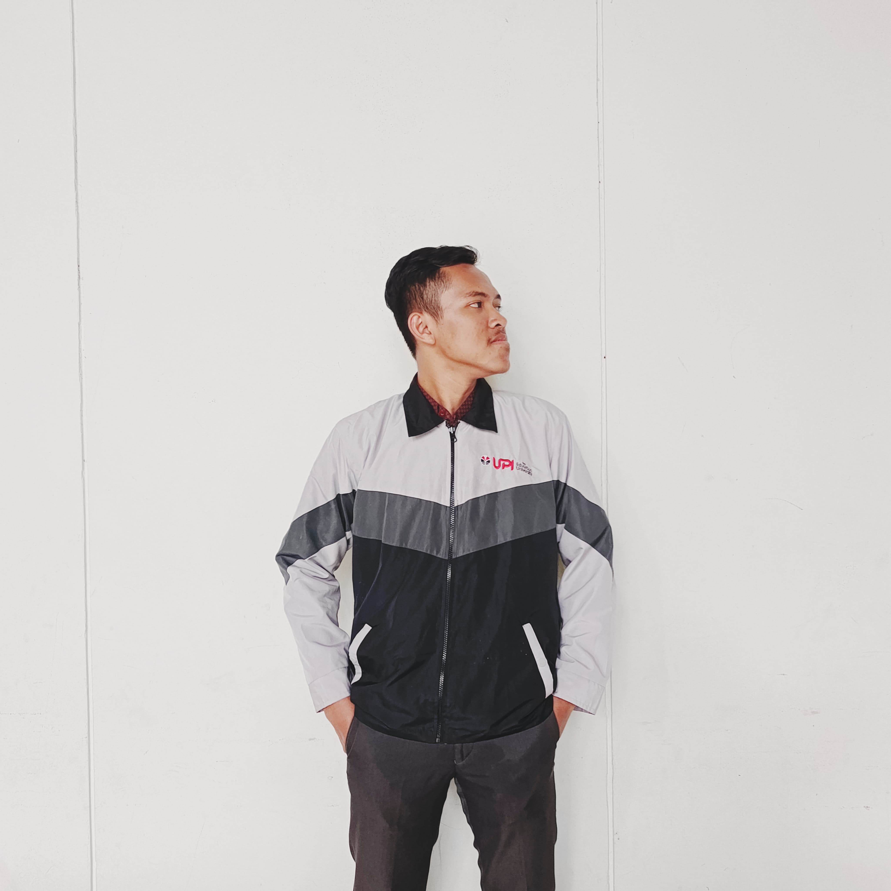
Program Kerja DEPIKOM
-
01Mimin Alif & Mimin Zahra
Konten pengingat dzikir pagi & petang serta surat Al-Kahfi secara rutin lewat media sosial, setiap hari pagi dan sore.
-
02Media Center
Pusat informasi dan dakwah BAQI secara online (Instagram, TikTok, YouTube) maupun offline, mencakup publikasi kegiatan.
-
03GenQ's Family
Program kepedulian antar anggota — dukungan saat musibah dan apresiasi berupa hadiah bagi anggota yang diwisuda.
-
04UKM Expo
Memperkenalkan BAQI UPI saat Mokaku melalui video profil, video penyambutan mahasiswa baru, dan poster BAQI.
-
05MadingQu → ReminderQu & BuletinQu
Konten dakwah digital berupa reminder islami, doa, dan motivasi dari ayat Al-Qur'an/hadits — setiap Sabtu dan Ahad.
Program Unggulan
Tumbuh Bersama dalam Iman
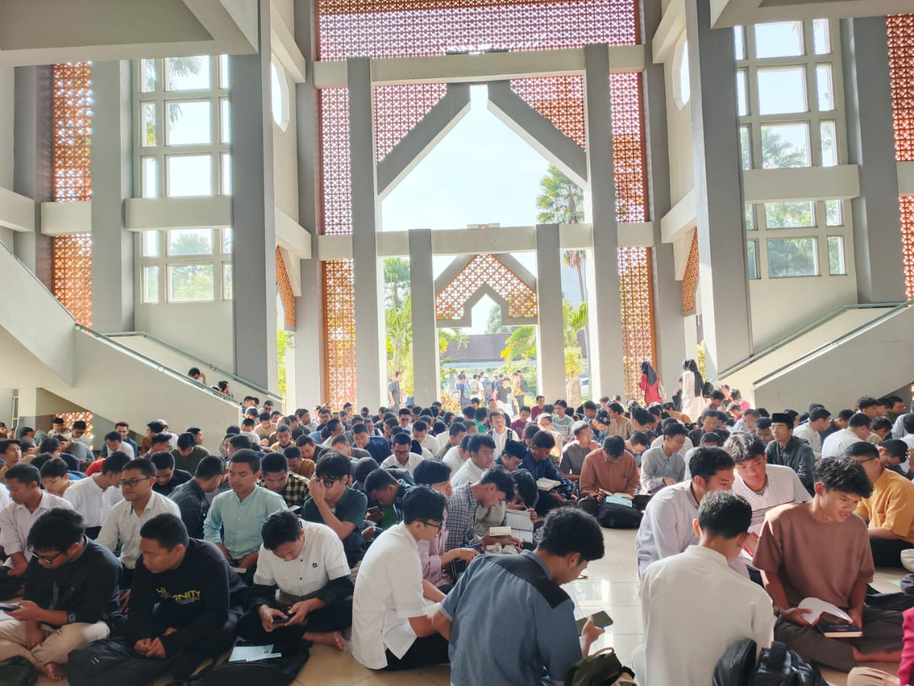
Post-Test dan Pre-Test
Kegiatan Test baca Al-Qur'an untuk mengetahui tingkat bacaan Al-Qur'an, lalu mahasiswa akan di test kembali.
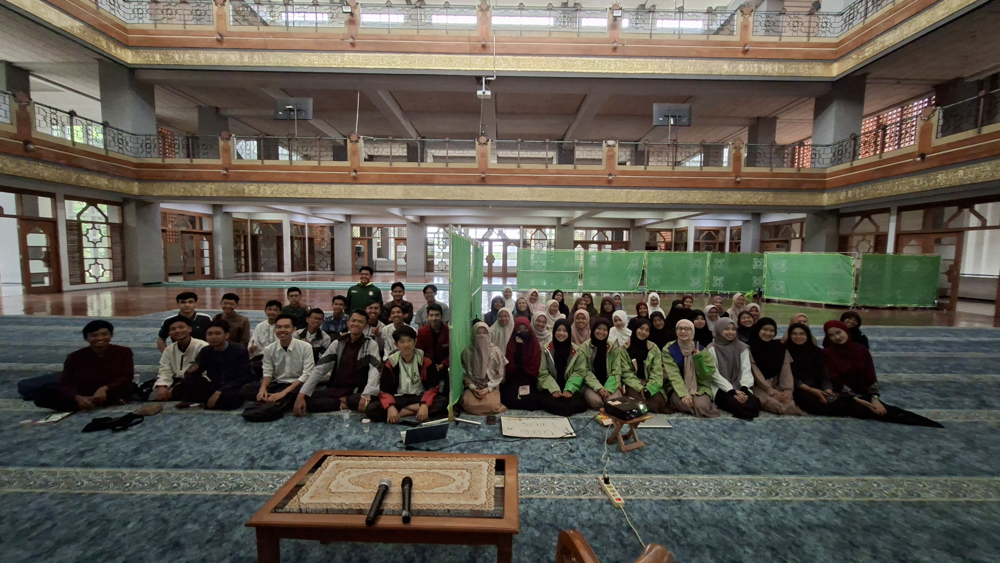
Go PMQ
Rangkaian Kaderisasi untuk mempersiapkan CaGenQ menjadi GenQ yang siap berdinamika di kepengurusan atau seminimalnya untuk diri mereka sendiri.
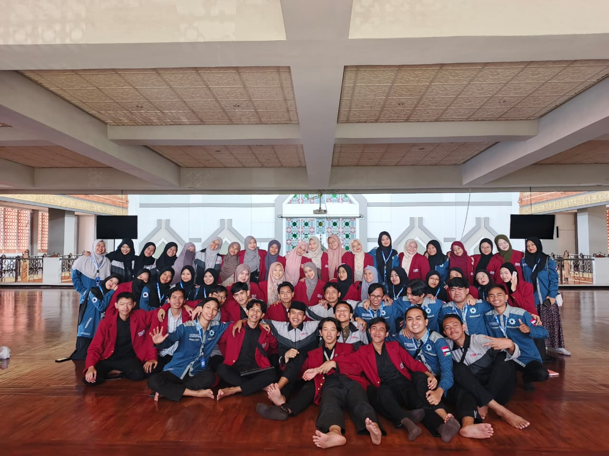
Studi Banding
Program untuk berdiskusi, saling berbagi pengalaman dan insight terkait pengelolaan organisasi dengan organisasi kampus lain yang memiliki visi dan misi serupa.
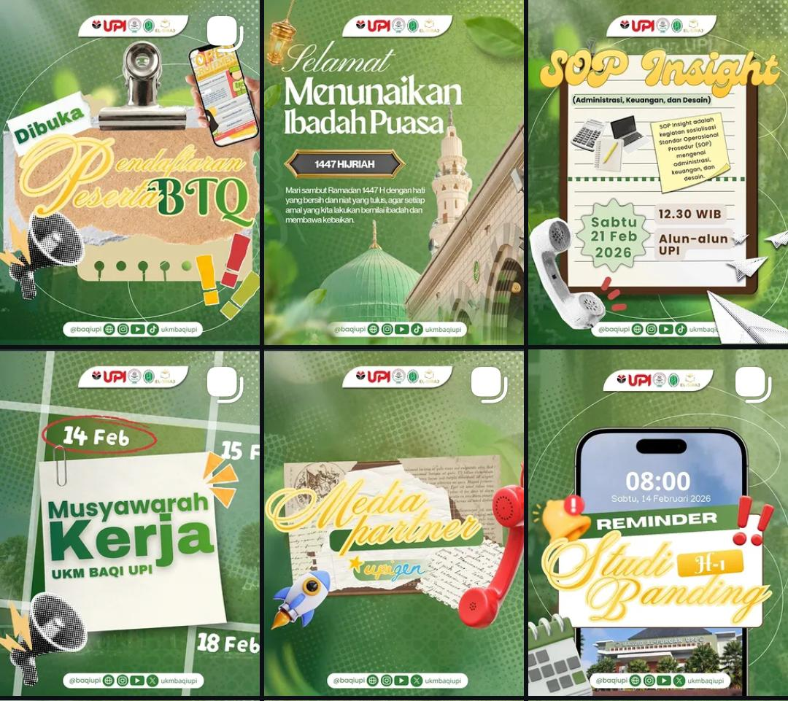
Media Centre
Media informasi, komunikasi dan sarana dakwah seputar kegiatan BAQI.
Layanan & Fasilitas
Fasilitas yang Ada

Peminjaman Inventaris
Layanan peminjaman alat multimedia, sound system, dan perlengkapan event untuk kegiatan dakwah fakultas atau jurusan.
Galeri
Momen Kebersamaan
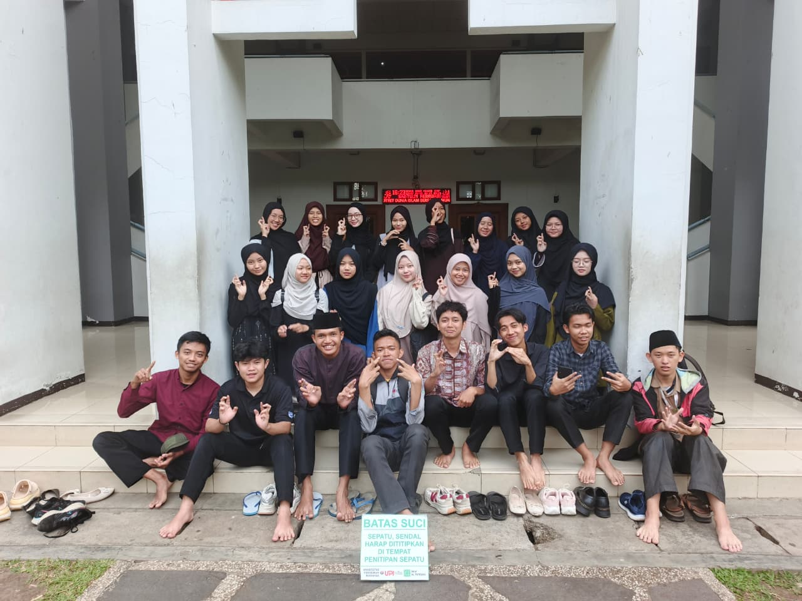
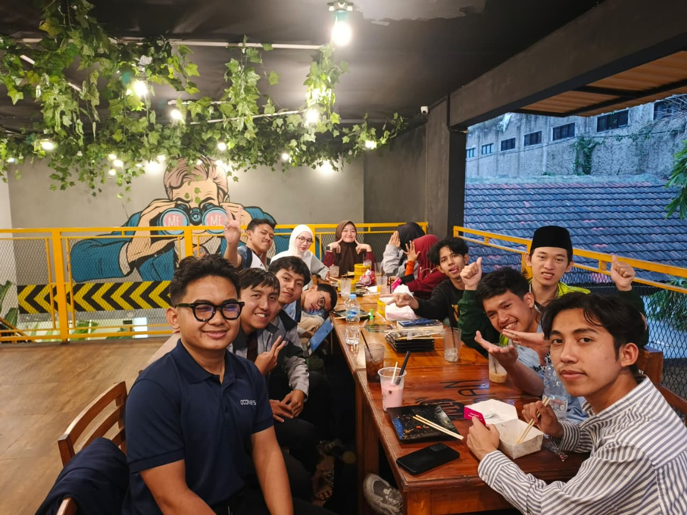
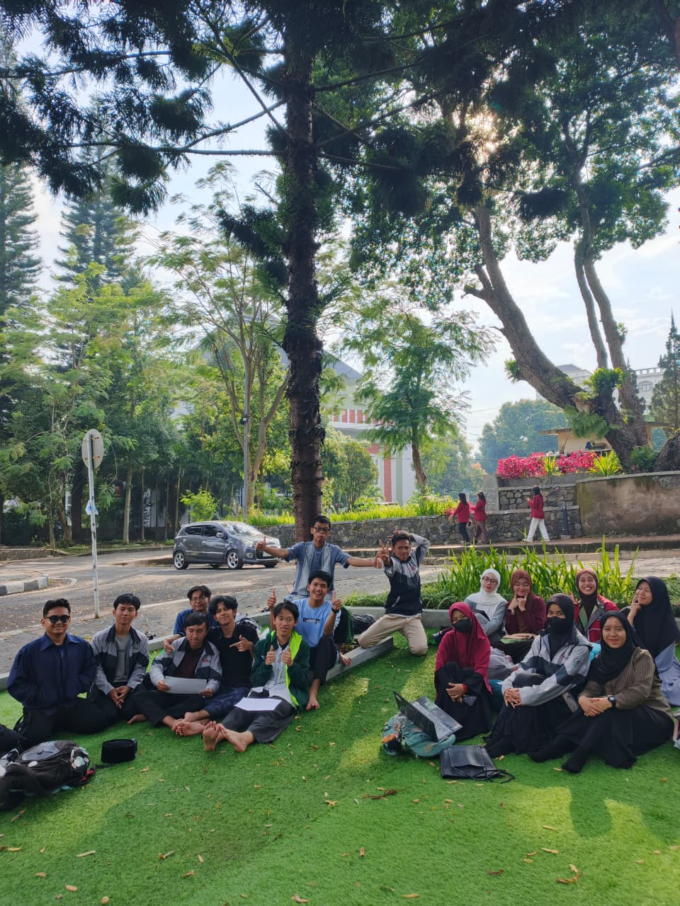
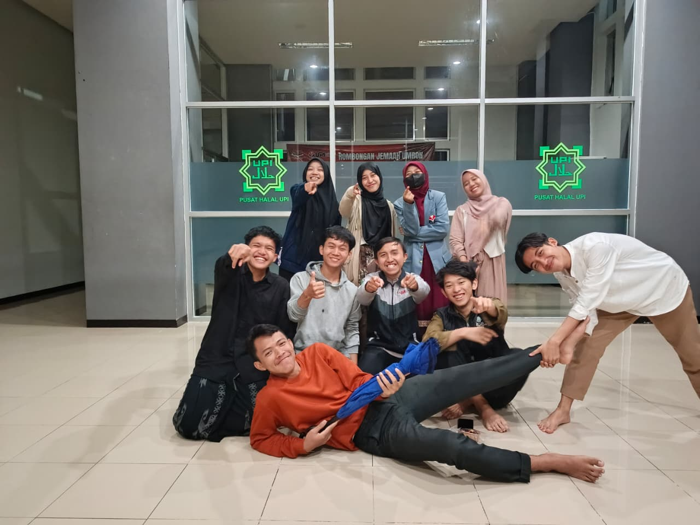
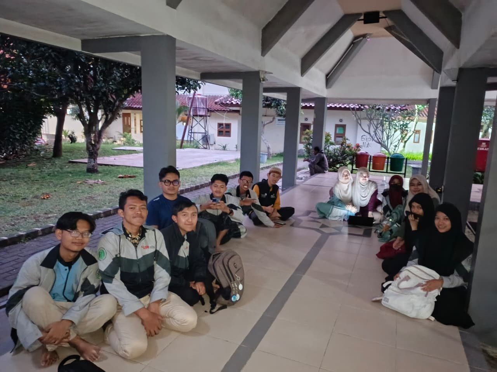
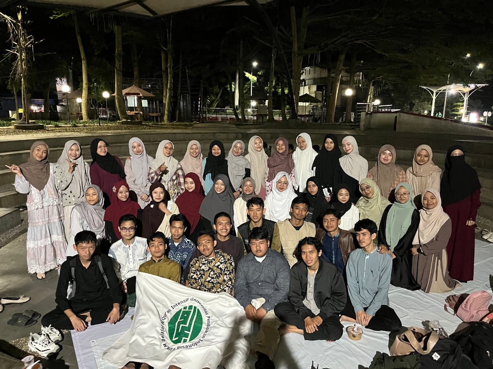
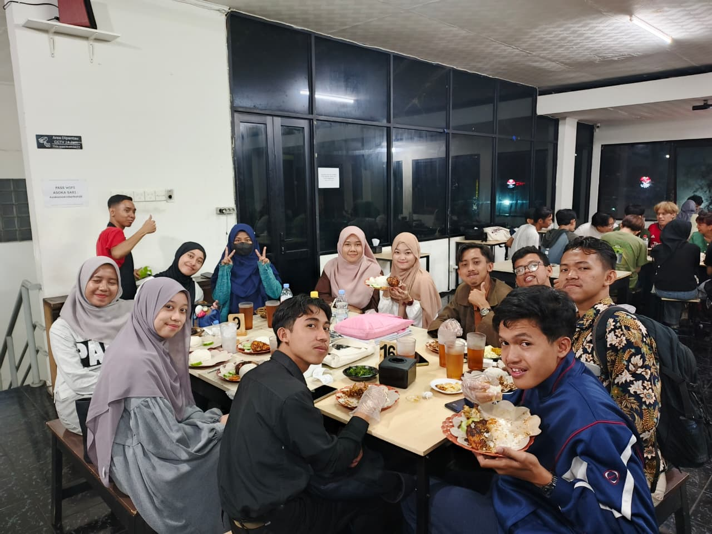
Bergabunglah Bersama Kami
Jadilah bagian dari keluarga BAQI UPI. Pendaftaran anggota baru akan segera dibuka.
Kontak
Hubungi Kami
Sekretariat
Gedung Gegeut-Winda (PKM) UPI, Jl. Dr. Setiabudi No.229, Isola, Kec. Sukasari, Kota Bandung, Jawa Barat 40154
ukmbaqiupi@gmail.com
+62 877-7791-8666
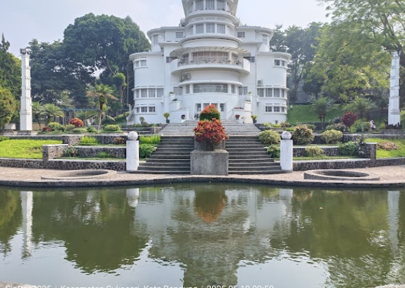